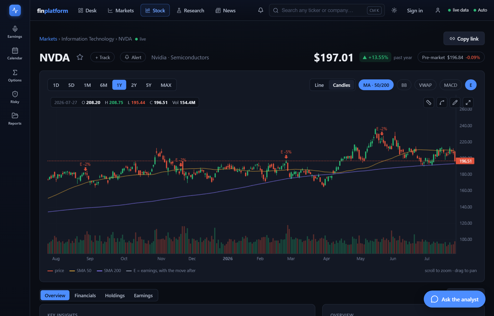
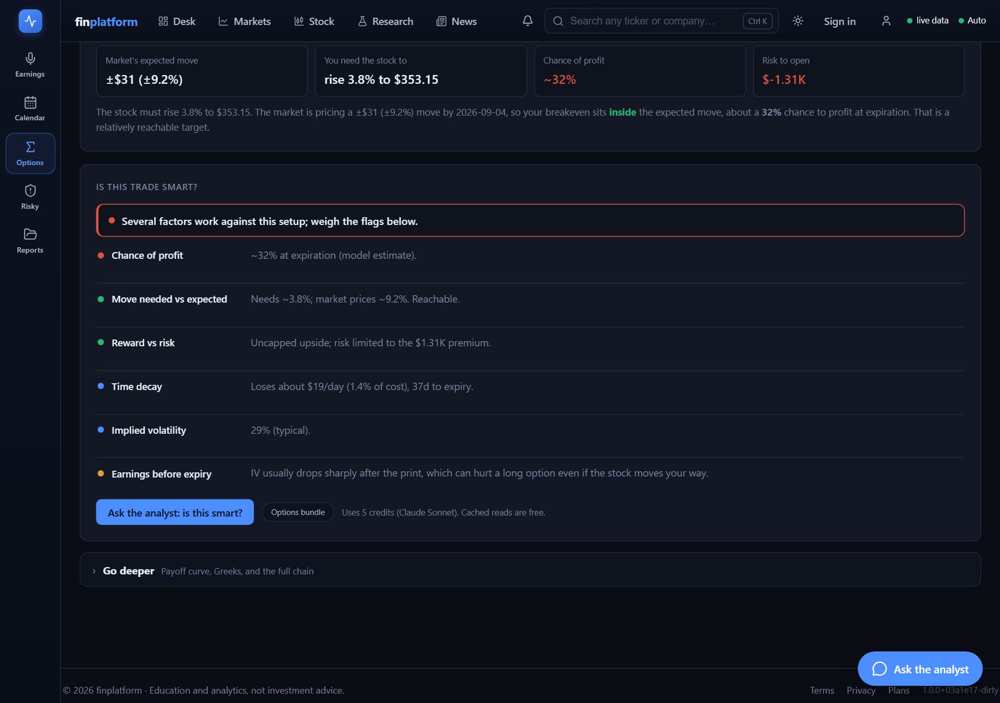
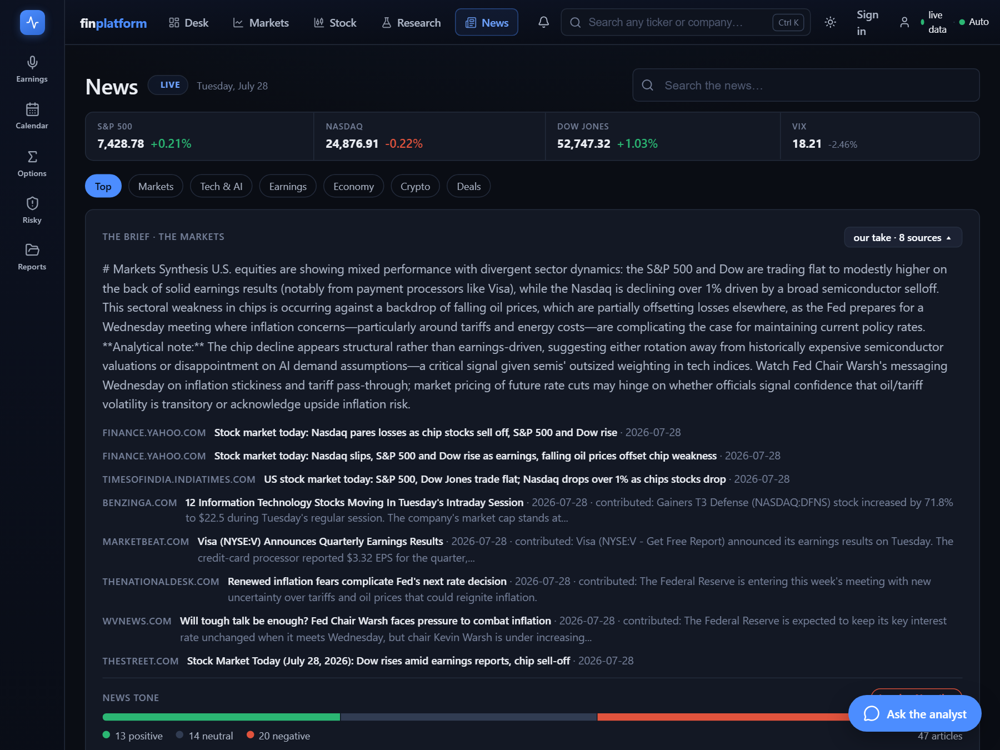

1. One terminal beats five demos
Infera, RoboAdvisor, Earnings-Digest, Morsel, and proTerminal each proved a capability; none was a product. Consolidating them forced one data layer, one design system, and one opinion about what a research answer owes its reader. The result runs as a React SPA over a Python backend on Cloud Run, with Supabase holding accounts, credits, reports, and the shared caches.

Figure 1 · the life of a request
Every read on the site walks the same path. The order is the architecture: cheap and honest checks first, paid work last, and nothing reaches the reader without provenance.
2. The data ledger
Before any AI, the honest question is what the data costs and where it comes from. This is the actual ledger. Each row expands into the decision record behind it: the context, the call I made, and what that call cost or saved in practice.
yfinancequotes · chains · fundamentals$0prod
- Context
- The spine of every price on the site. Free, delayed about 15 minutes, and it throttles hard under load.
- Decision
- Serve the last real value with a visible timestamp instead of retrying into the throttle. A licensed feed is validated in a sandbox but is not the spine yet: free data plus honest staleness labels covers the current surface, and live redistribution carries licensing constraints.
- Consequences
- Under heavy load the site shows “as of 14:02” rather than a spinner or a fake tick. Long chart windows route to a separate series so adjusted and unadjusted bars never splice inside one chart.
SEC EDGAR10-K/Q · 8-K · ownership$0prod
- Context
- Filings power the earnings and leadership surfaces. Vendor APIs summarize; the primary source is checkable.
- Decision
- Parse EDGAR directly. Accept slower parsing in exchange for citations that point at the actual filing.
- Consequences
- The parser only exists in the project virtualenv. Run the server under the wrong interpreter and SEC features silently go empty: no error, just thinner pages. That happened, and it is now a documented run rule with a check.
SearXNGself-hosted metasearch$0 marginaldegraded in prod
- Context
- I wanted a search floor with no API key, so development and the free tier never hard-depend on a vendor.
- Decision
- Self-host SearXNG: a Podman container on my workstation, a Cloud Run service in production.
- Consequences
- On my desk it works. In production it starves: Google and Bing block requests from datacenter IP ranges, so the deployed instance returns a trickle. It stays as the dev default and the last rung, and its production failure is the direct reason the two paid rungs below exist. One config trap cost real debugging time: JSON output is off by default, and a stock container answers 403 in a way that looks exactly like “no news today.”
Tavilysearch + article extraction~$0.008 / queryrung 1
- Context
- LLM synthesis needs article text, not links. Tavily returns extracted content with a news filter.
- Decision
- First paid rung: called only on cache miss, only under a per-day budget. A quota response marks the source exhausted for the day or month, so the ladder stops paying to be told no.
- Consequences
- Quotas do hit, and the ladder degrades one rung instead of failing. One measured foot-gun: sending an empty
include_domains: []silently degraded results to a months-stale corpus. Deleting that one line moved the newest article for the same query from January to same-day.
SerperGoogle News SERP$0.0003 / queryrung 2
- Context
- Needed volume roughly 25× cheaper than rung 1 for when it is empty or exhausted: 2,500 free queries a month, then $0.30 per thousand.
- Decision
- Use it for headlines and accept thin snippets. Article text, when a reader wants it, comes from the page itself.
- Consequences
- Dates arrive relative, like “3 hours ago.” Unconverted, those items rank as undated and lose their freshness weight, so the fallback rung scored worse than the rung it replaced until dates were absolutized at ingest. It also returns an image per story, which currently supplies most of the card art.
Search cachememory → Postgres · 2h TTLamortizerprod
- Context
- Cloud Run instances are ephemeral. A per-instance cache re-pays every provider cost on every cold start, and per-user caching multiplies cost by audience size.
- Decision
- Two tiers: in-process memory for the hot path, then a shared Postgres table keyed by normalized query. One user’s NVDA search serves every user, on every instance, for the TTL.
- Consequences
- Provider spend scales with distinct stories, not with readers. Cache-served pages carry an “as of” stamp instead of a LIVE badge. Freshness is shown, never implied.
Ollama · qwen2.5 7Bclassify · route · fallback$0 marginaldev floor
- Context
- Small classification and routing calls happen constantly. Paying API rates for them adds up, and development should run keyless.
- Decision
- A local 7B on my own GPU handles classify and route, and is the full fallback when no API key is configured.
- Consequences
- It follows format instructions unreliably, which forced a rule I now apply to every model: output invariants are enforced in code after the call, not requested in the prompt. Section 5 is that rule, generalized.
Anthropic APIextraction · synthesis$0.002–$0.03 / calltiers 2–3
- Context
- Different tasks deserve different models. Entity extraction is cheap-model work; a cross-article synthesis is not.
- Decision
- Route by task: Haiku for extraction and briefs at fractions of a cent, Sonnet for heavy synthesis only. The serving model is recorded in every artifact’s provenance, and the user can cap the tier per request.
- Consequences
- Cost stays proportional to task difficulty. And because passive page loads reach models too, every model-touching endpoint shares one per-IP throttle with the metered ones. Without it, an anonymous visitor rotating tickers buys unbounded inference at my expense.
Figure 2 · one dataset, bought once: the earnings tape
The ledger above covers live reads. Bought data works differently: it is measured once, receipted, committed, and re-derived for free forever. This is the pipeline behind the earnings anatomy, 961 measured earnings events across 121 tickers on licensed tape, lifetime spend $0.91.
The statistical claim this bought: in the mega-caps, options price earnings moves about right (36% outside implied, consistent with fair pricing). In the broader 100-name universe, stocks closed outside the implied band 48% of the time. Pooled 45.8%, 95% CI 42.7–49.0. The tiers matter more than the pooled number, and the method (closing straddle mid × 0.85) ships with the claim.
3. Two environments, different hardware on purpose
Development had to cost nothing per iteration and work offline. Production had to survive spiky, mostly idle traffic without a standing bill. Those are different problems, so the environments differ deliberately, and every gap between them has to be visible in the UI rather than papered over.
| Development (workstation) | Production (GCP) | |
|---|---|---|
| Compute | Python 3.13 venv, Windows | Cloud Run containers, scale to zero |
| Local model | Ollama qwen2.5 7B on the GPU | none; API tiers with a deterministic fallback |
| Search floor | SearXNG in Podman | SearXNG on Cloud Run, degraded (§2) |
| Database | one shared Supabase project, so dev exercises the same RLS policies and cache tables prod depends on | |
| Secrets | .env, gitignored | GCP Secret Manager, referenced by the deploy |
| Deploy | run locally | GitHub Actions → prod + a private sandbox off the develop branch |
4. The report contract
Every artifact the API returns, from a news brief to a research dossier, uses one envelope. Here is a real instance first, from the morning brief traced in section 7, then the shape.
Instance · /api/news/brief
{
"kind": "news_brief",
"as_of": "2026-07-28T21:33:41Z",
"status": "complete",
"data": {
"subject": "the markets",
"brief": "U.S. equities are mixed:
the S&P 500 and Dow flat to higher
on solid earnings, the Nasdaq down
over 1% on a semiconductor
selloff…"
},
"provenance": {
"model": "claude-haiku-4-5",
"tier": "T2_MID",
"elapsed_ms": 2141,
"sources": [
{ "domain": "finance.yahoo.com",
"title": "Nasdaq pares losses
as chip stocks sell off",
"published_at": "2026-07-28" },
… 7 more
]
}
}
Shape · every artifact
Report { kind, as_of status # complete | partial # | unavailable notes[] # why, when partial data # typed per kind provenance { model, tier, credits, elapsed_ms sources[] { url, title, domain, published_at } } }
- Context
- Before this, about twenty endpoints had grown five shapes for “sources” (including a bare integer on four of them) and four names for “when is this from.” An integer source count is the one version of a citation a reader cannot click or check.
- Decision
- One envelope. A report that fails is still a report: same keys,
status: "unavailable", the reason written for a person. - Consequences
- The client never branches on shape, empty pages explain themselves, and a saved report can be frozen and shared because it is self-contained. Credits in provenance make cost legible per artifact: a cheap model costs little, a deep research run costs ten times more, and the interface says so before you spend.
5. The behavior eval: four invariants
LLMs lie confidently, so every answer is held to four invariants. No fabrication. No obeying instructions injected through retrieved text. Honest caveats. Abstain when the data isn’t there. The eval runs offline in CI against a single compose-answer path, which is what makes the invariants enforceable rather than aspirational: there is exactly one place where model output becomes user-facing text.
The rule underneath it came from the local 7B and generalized to every model: a prompt is a request, not a mechanism. Anything that must be true of the output, no markdown in prose, no banned phrasing, grounding present, gets checked or enforced in code after the call. The prompt asks nicely; the code makes it so.
6. Shipping “no edge” as a feature
I built a swing-trade signal engine for this platform and tested it hard: sixteen configurations against real data. The verdict was no real edge. finplatform says that to your face, and the options surface was rebuilt around that honesty. Instead of predictions, it shows what the market already prices: the expected move, the move you need, the chance of profit, and the flags working against you.

I’d rather ship the truth than a demo that flatters you. A research tool owes you the truth even when the truth is “don’t.”
7. One morning brief, end to end
The clearest way to show the system is to trace one thing it made. This shipped on July 28: the market brief, with its receipts open.

Six fixed entity queries warm the market pool through the ladder in §2. Rung 1 was quota-exhausted that morning, so rung 2 served all six: $0.0018 total, then cached. The next reader triggers zero provider calls.
Section indexes, symbol pages, and anything dated outside the week are dropped before ranking. Relevance multiplies the score blend, so a fresh, reputable, off-topic page cannot outrank an on-topic one. Eight rows survive.
Haiku writes the take over the eight rows. Headlines enter the prompt marked untrusted; markdown and banned phrasing are stripped in code after the call.
It ships as the Report instance in §4: model named, eight sources one click away with publisher, date, and contribution. Total model and data cost on screen: under a cent.
That is the whole architecture in one artifact: paid data entering through a budgeted ladder, a shared cache making it cheap, a routed model synthesizing it, invariants enforced in code, and provenance carried all the way to the pixel a reader can click.